고정 logit 0 기준. FIT45(D39/E6), DEV12(D9/E3). nominal S0는 FIT20(D15/E5), DEV7(D4/E3)입니다. 전체360 중 나머지303행의 truth/location 미지는 모델 U가 아닙니다. strong7040의 eligible6096은 TRAIN apparent이며 독립 검증이 아닙니다. DEV도 사전 노출 SOURCE로, fresh blind·human gold·native point gold가 아닙니다. 새 q8 자체는 GT-derived 학습 입력입니다. 승자·threshold·adoption을 고르지 않고 두 팔을 보존합니다.
수치·strata · CSV · 57행 paired JSON
| 원 RGB96 (새 이미지 수정 없음) | row / 역할 / 부위 | truth | STRONG_ONLY_CONTROL | STRONG_PLUS_EXPECTED_PART_WEAK |
|---|---|---|---|---|
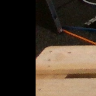 | F00_C000000_S0_N4SOURCE_FIT / n4 DECK | D | logit -2.632894 prediction D | logit -31.32199 prediction D |
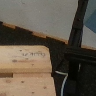 | F00_C000000_S0_N5SOURCE_FIT / n5 DECK | D | logit 4.126767 prediction E | logit -23.60846 prediction D |
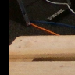 | F00_C000000_S1_N4SOURCE_FIT / n4 DECK | D | logit -12.50323 prediction D | logit -28.64707 prediction D |
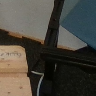 | F00_C000000_S1_N5SOURCE_FIT / n5 DECK | D | logit 6.895471 prediction E | logit -16.91784 prediction D |
F00_C000000_S2_N4SOURCE_FIT / n4 DECK | D | logit -11.26219 prediction D | logit -36.66293 prediction D | |
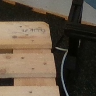 | F00_C000000_S2_N5SOURCE_FIT / n5 DECK | D | logit -2.47709 prediction D | logit -11.99115 prediction D |
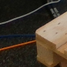 | F02_C000000_S0_N0SOURCE_FIT / n0 DECK | D | logit -2.604389 prediction D | logit -21.42636 prediction D |
F02_C000000_S0_N4SOURCE_FIT / n4 DECK | D | logit -15.12145 prediction D | logit -18.80499 prediction D | |
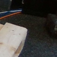 | F02_C000000_S0_N5SOURCE_FIT / n5 DECK | D | logit -14.41556 prediction D | logit -19.87185 prediction D |
F02_C000000_S1_N0SOURCE_FIT / n0 DECK | D | logit -14.57232 prediction D | logit -33.49171 prediction D | |
F02_C000000_S1_N4SOURCE_FIT / n4 DECK | D | logit -0.2353061 prediction D | logit -11.17469 prediction D | |
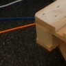 | F02_C000000_S2_N0SOURCE_FIT / n0 DECK | D | logit -3.128645 prediction D | logit -29.02915 prediction D |
F02_C000000_S2_N4SOURCE_FIT / n4 DECK | D | logit 8.060613 prediction E | logit -13.80474 prediction D | |
F02_C000000_S2_N5SOURCE_FIT / n5 DECK | D | logit -2.451916 prediction D | logit -22.29051 prediction D | |
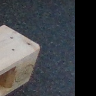 | F02_C000001_S0_N5SOURCE_FIT / n5 DECK | D | logit -7.493649 prediction D | logit -26.6168 prediction D |
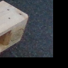 | F02_C000001_S2_N5SOURCE_FIT / n5 DECK | D | logit 8.494379 prediction E | logit -32.36031 prediction D |
F03_C000000_S0_N0SOURCE_FIT / n0 DECK | D | logit 14.62329 prediction E | logit -11.42657 prediction D | |
F03_C000000_S0_N3SOURCE_FIT / n3 BOTTOM_RUNNER | D | logit -1.596732 prediction D | logit -39.30276 prediction D | |
F03_C000000_S0_N5SOURCE_FIT / n5 DECK | E | logit -7.295015 prediction D | logit 14.43588 prediction E | |
F03_C000000_S1_N0SOURCE_FIT / n0 DECK | D | logit 10.48671 prediction E | logit -22.52677 prediction D | |
F03_C000000_S1_N3SOURCE_FIT / n3 BOTTOM_RUNNER | D | logit 11.0119 prediction E | logit -27.71828 prediction D | |
F03_C000000_S2_N0SOURCE_FIT / n0 DECK | D | logit 8.063484 prediction E | logit -20.35406 prediction D | |
F03_C000000_S2_N3SOURCE_FIT / n3 BOTTOM_RUNNER | D | logit 3.048104 prediction E | logit -24.78508 prediction D | |
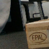 | F04_C000000_S0_N0SOURCE_FIT / n0 DECK | D | logit 10.31954 prediction E | logit -18.03074 prediction D |
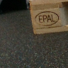 | F04_C000000_S0_N3SOURCE_FIT / n3 BOTTOM_RUNNER | D | logit -12.0265 prediction D | logit -35.44019 prediction D |
F04_C000000_S0_N5SOURCE_FIT / n5 DECK | E | logit 2.718848 prediction E | logit 16.13644 prediction E | |
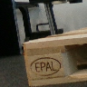 | F04_C000000_S1_N0SOURCE_FIT / n0 DECK | D | logit -1.053079 prediction D | logit -17.70467 prediction D |
F04_C000000_S1_N3SOURCE_FIT / n3 BOTTOM_RUNNER | D | logit -2.187093 prediction D | logit -42.38728 prediction D | |
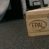 | F04_C000000_S2_N0SOURCE_FIT / n0 DECK | D | logit -19.64435 prediction D | logit -50.43464 prediction D |
F04_C000000_S2_N3SOURCE_FIT / n3 BOTTOM_RUNNER | D | logit -3.019745 prediction D | logit -37.63173 prediction D | |
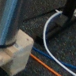 | F05_C000000_S0_N1SOURCE_DEV / n1 DECK | D | logit -6.636981 prediction D | logit 0.2116401 prediction E |
F05_C000000_S0_N4SOURCE_DEV / n4 DECK | D | logit -6.685525 prediction D | logit -29.73373 prediction D | |
F05_C000000_S0_N5SOURCE_DEV / n5 DECK | E | logit 17.86844 prediction E | logit 15.17563 prediction E | |
F05_C000000_S1_N4SOURCE_DEV / n4 DECK | D | logit -13.39175 prediction D | logit -21.81449 prediction D | |
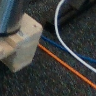 | F05_C000000_S2_N1SOURCE_DEV / n1 DECK | D | logit 22.10279 prediction E | logit -9.039787 prediction D |
F05_C000000_S2_N4SOURCE_DEV / n4 DECK | D | logit -15.98539 prediction D | logit -23.99386 prediction D | |
F06_C000003_S0_N0SOURCE_FIT / n0 DECK | D | logit 0.08417833 prediction E | logit -15.16316 prediction D | |
F06_C000003_S0_N1SOURCE_FIT / n1 DECK | D | logit -12.18318 prediction D | logit -30.41159 prediction D | |
F06_C000003_S1_N0SOURCE_FIT / n0 DECK | D | logit 9.053995 prediction E | logit -21.334 prediction D | |
F06_C000003_S2_N0SOURCE_FIT / n0 DECK | D | logit -17.53657 prediction D | logit -16.27884 prediction D | |
F06_C000003_S2_N1SOURCE_FIT / n1 DECK | D | logit 19.73405 prediction E | logit -27.46438 prediction D | |
F07_C000003_S0_N0SOURCE_FIT / n0 DECK | D | logit -7.101218 prediction D | logit -14.06256 prediction D | |
F07_C000003_S0_N1SOURCE_FIT / n1 DECK | D | logit 12.83288 prediction E | logit -31.28605 prediction D | |
F07_C000003_S0_N4SOURCE_FIT / n4 DECK | D | logit -4.622073 prediction D | logit -15.17733 prediction D | |
F07_C000003_S0_N5SOURCE_FIT / n5 DECK | E | logit -27.72469 prediction D | logit 10.38179 prediction E | |
F07_C000003_S1_N4SOURCE_FIT / n4 DECK | D | logit -20.20386 prediction D | logit -29.18274 prediction D | |
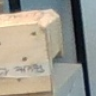 | F07_C000003_S2_N0SOURCE_FIT / n0 DECK | D | logit 5.508047 prediction E | logit -24.7494 prediction D |
F07_C000003_S2_N4SOURCE_FIT / n4 DECK | D | logit -5.031936 prediction D | logit -22.12688 prediction D | |
F07_C000003_S2_N5SOURCE_FIT / n5 DECK | E | logit 9.839089 prediction E | logit 12.57618 prediction E | |
F08_C000003_S0_N1SOURCE_DEV / n1 DECK | D | logit 10.89641 prediction E | logit -32.65763 prediction D | |
F08_C000003_S0_N4SOURCE_DEV / n4 DECK | D | logit 2.75292 prediction E | logit -13.48429 prediction D | |
F08_C000003_S0_N5SOURCE_DEV / n5 DECK | E | logit -25.167 prediction D | logit -23.76262 prediction D | |
F08_C000003_S1_N4SOURCE_DEV / n4 DECK | D | logit 7.64265 prediction E | logit -2.219164 prediction D | |
F08_C000003_S2_N4SOURCE_DEV / n4 DECK | D | logit -5.08599 prediction D | logit -17.28216 prediction D | |
F09_C000000_S0_N4SOURCE_FIT / n4 DECK | E | logit 16.11811 prediction E | logit 14.72019 prediction E | |
F10_C000000_S0_N5SOURCE_DEV / n5 DECK | E | logit 12.20617 prediction E | logit 16.78521 prediction E | |
F11_C000000_S0_N4SOURCE_FIT / n4 DECK | E | logit -17.88356 prediction D | logit 16.77645 prediction E |
기존57 PNG의 상대링크만 작성했습니다. reducer는 이미지 본문을 읽거나 수정하지 않았으며 브라우저 렌더를 수행하지 않았습니다.